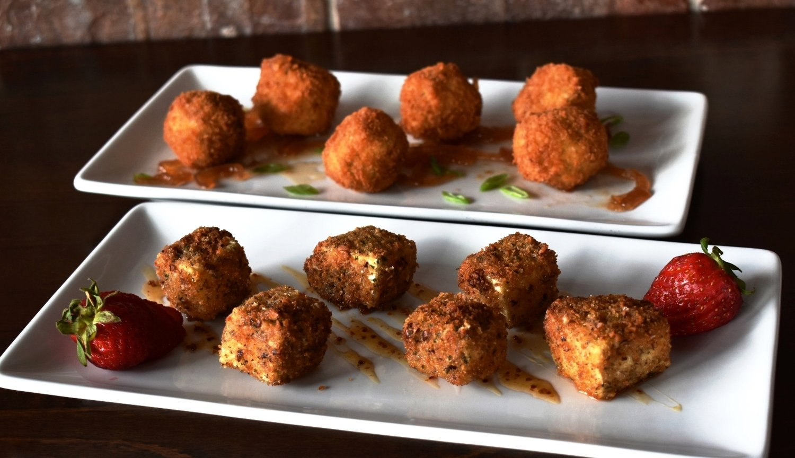
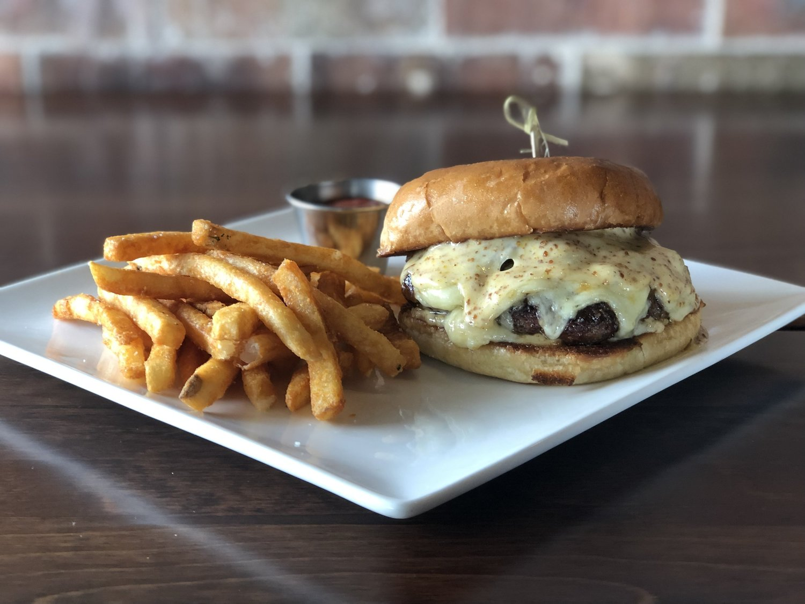
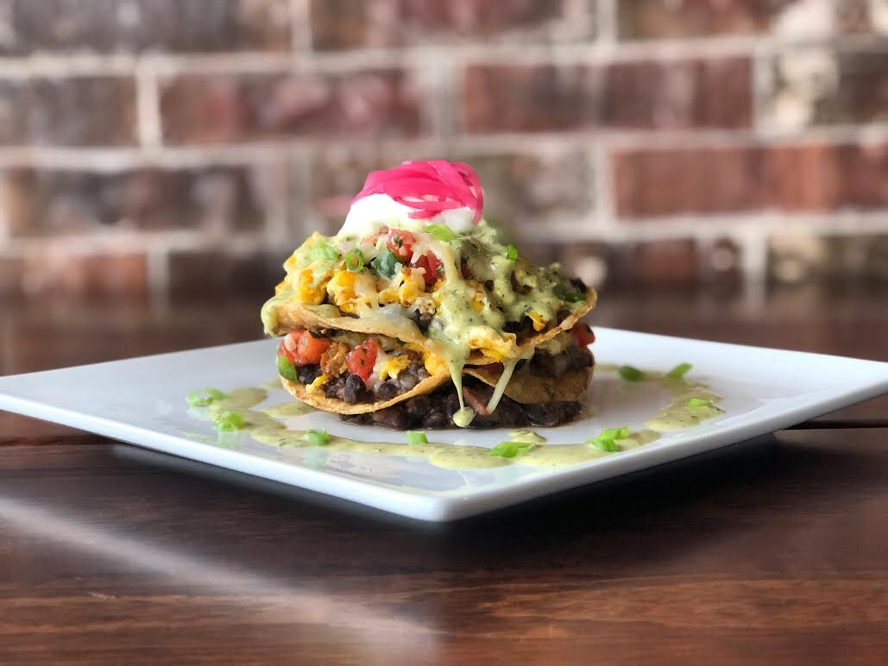
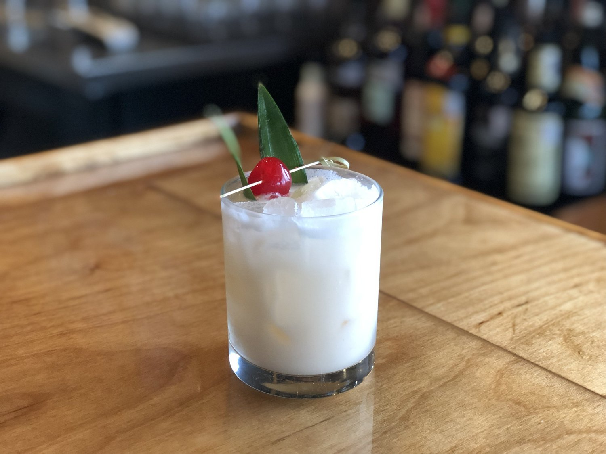

Poppers y para compartir
Poppers de pato, camarón con chorizo, tartar de atún.
New Braunfels · Parkview
Restaurante New American en el corazón de New Braunfels — platos de temporada, sabor texano y un menú que cambia con el mercado.
Para empezar
Algunos favoritos de la cocina — el menú completo va abajo.

Poppers de pato, camarón con chorizo, tartar de atún.

Salmón, pollo a la pecana, filete y clásicos New American.

Benedicts, shrimp & grits, bistec con huevos — 11 a 2.
Happy Hour
$3 de descuento en hamburguesas y dip de espinaca · botanas y bebidas especiales.

Barra
Tragos de la casa y happy hour mar–sáb de 3 a 6.
Vinos, cervezas y destilados pueden cambiar.
Visítanos
Cocina New American en New Braunfels — comida, cena, happy hour y brunch del domingo.